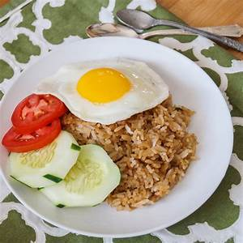
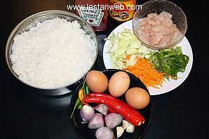
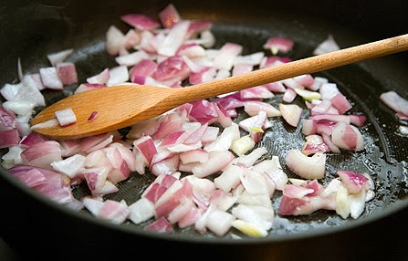
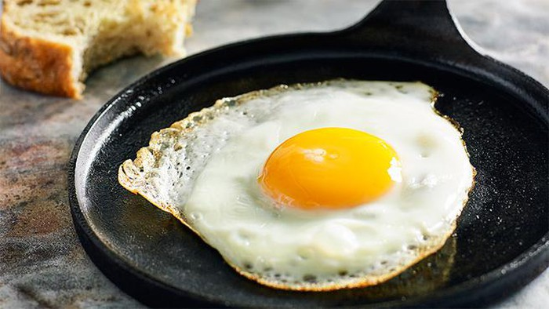

Resep Nasi Goreng

Bahan - Bahan :
- Nasi
- Bawang Merah
- Bawang Putih
- Garam
- Telur
- Mentimun
- Tomat
- Daging Ayam Suwir
- Cabai Merah Besar
- Saos Tomat/Cabai
Langkah - Langkah :
- Siapkan Alat Dan Bahan

- Potong - Potong Bawang Merah & Bawang Putih

- Tumis Bawang Merah, Bawang Putih

- Setelah Selesai Menumis, Masukkan Nasi Dan Sedikit Saos Tomat/Cabai

- Setelah Nasi Matang, Angkat Dari Wajan. Kemudian Masak Telor

- Setelah Telor Matang, Nasi Goreng Siap Disajikan